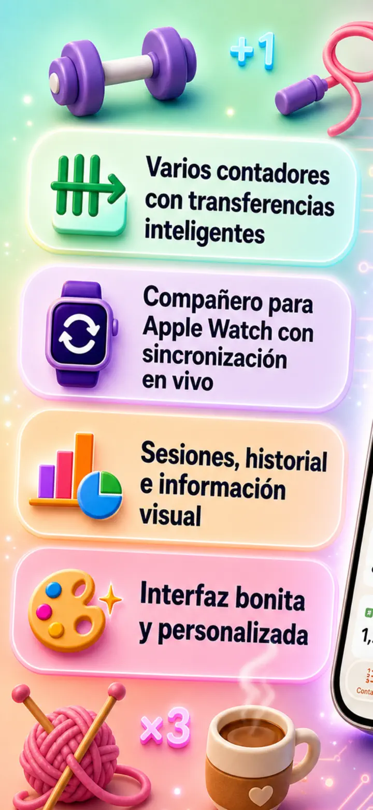
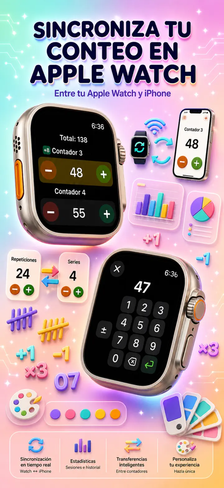
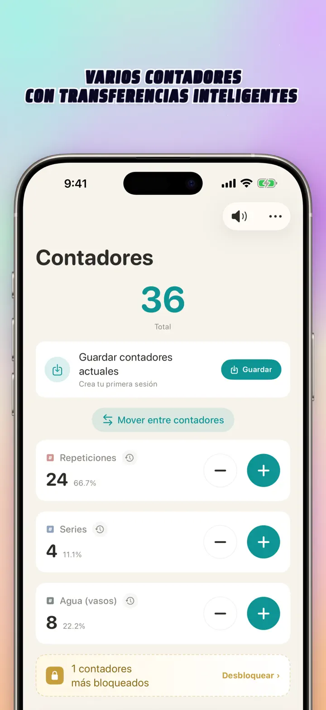
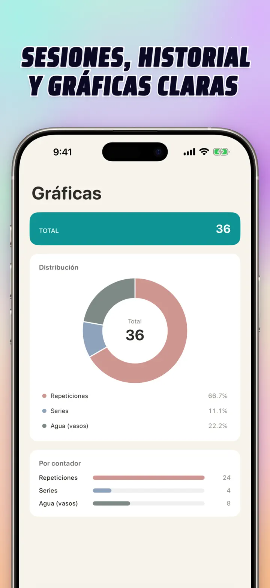
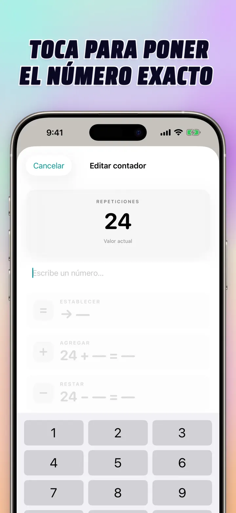
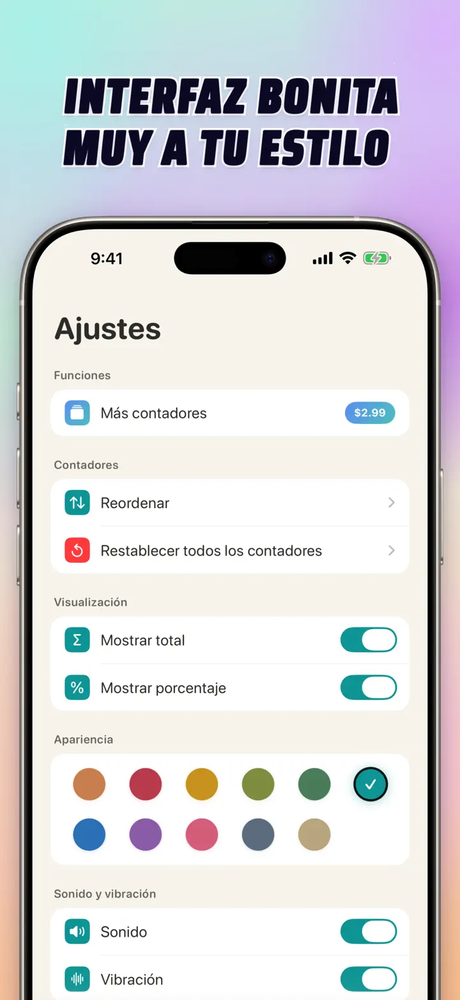
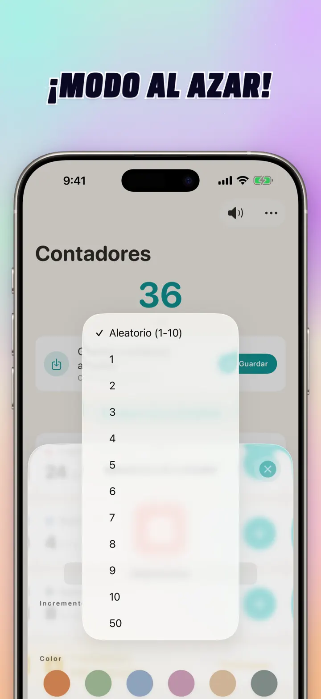

Contador 123
Sync Watch, clicker y score
Nuevo: widgets en la pantalla de inicio — toca +/- en el widget sin abrir la app. Contador y clicker con sync Apple Watch, modo aleatorio, gráficas e historial.
Descargar en App Store
Acerca de la app
Contador 123 es el contador más rápido y flexible para iPhone, iPad y Apple Watch. Dale nombre a tus contadores, elige un color y cuenta lo que sea — repeticiones del gym, vueltas de tejido, rosario, puntos en clase, inventario, marcadores del juego. Todo queda en tu celular o tableta, sin conexión.
CONTADORES PERSONALIZADOS
- Crea contadores separados para actividades, juegos, rutinas o listas
- Nombre y color personalizados para cada uno
- Arrastra para reordenar
- Mantén presionado para contar rápido
- 100% sin conexión — sin registro, sin nube
ENTRADA AL INSTANTE & OPERACIONES MASIVAS
- Toca un contador para poner un valor inicial directo — sin reiniciar a cero
- Suma/Resta masiva: cambia un contador con cualquier número de un toque
- Transferencia: pasa un valor de un contador a otro sin hacer doble operación
- Paso personalizado: un toque suma 1, 5, 10, 100 o el número que elijas
- Vista previa en vivo de cada cambio
MODO ALEATORIO
- Haz que un contador saque un valor nuevo del 1 al 10 en cada toque
- Suma o resta valores aleatorios con los botones + y -
- Útil para drills, juegos, premios, actividades de clase y rutinas
- Cada toque aleatorio se guarda en el historial del contador
TOTALES & GRÁFICAS
- Total general de todos tus contadores
- Vista en porcentaje: qué tanto aporta cada contador
- Gráfica de barras interactiva — cambia entre valor (#) y porcentaje (%)
- Ordena por valor para ver el ranking al instante
HISTORIAL & COMPARTIR
- Historial completo: cada suma, resta y edición queda registrada
- Guarda y vuelve a cargar sets de contadores al momento
- Comparte configuraciones con amigos, equipo o alumnos
- Ve el historial como registro por fecha, sesiones agrupadas o estadísticas por día/semana/mes
SYNC EN VIVO CON APPLE WATCH
- Cambia un contador en iPhone o Apple Watch y ambos quedan sincronizados
- App nativa real para watchOS — no una simple companion
- Nombres, colores y valores sincronizados en tu muñeca
- Toca para contar, mantén presionado para repetir, directo desde el reloj
- Funciona sola aunque el celular esté lejos
HECHA PARA iPhone, iPad & APPLE WATCH
- Diseños adaptables a cualquier tamaño de pantalla
- iPad muestra más contadores al mismo tiempo, con Split View
- Privacidad primero: almacenamiento local, sin nube, sin cuenta
IDEAL PARA
- Series y repeticiones en el gym
- Vueltas de tejido y puntos de crochet
- Rosario, tasbih y rezos
- Puntos en clase y pase de lista
- Béisbol — conteo de pitches y turnos al bate
- Básquet, fut soccer, voleibol — marcador rápido
- Inventario y conteo de stock
- Dominó, lotería, pókar, juegos de mesa
- Vueltas de alberca y pista
- Observación de aves
- Conteo de personas en eventos
- Tracking de hábitos y metas diarias
¡Descarga Contador 123 y haz que cada cuenta sea pan comido — clara, rápida, privada!
Política de privacidad: https://masawata.net/privacy-policy.html Términos de uso: https://www.apple.com/legal/internet-services/itunes/dev/stdeula/
Capturas de pantalla






Contador 123
Nuevo: widgets en la pantalla de inicio — toca +/- en el widget sin abrir la app. Contador y clicker con sync Apple Watch, modo aleatorio, gráficas e historial.
Descargar en App Store